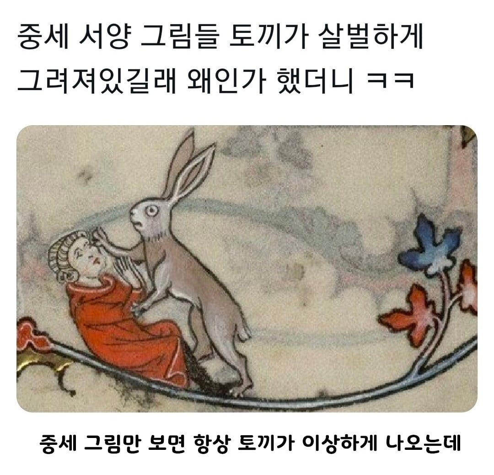
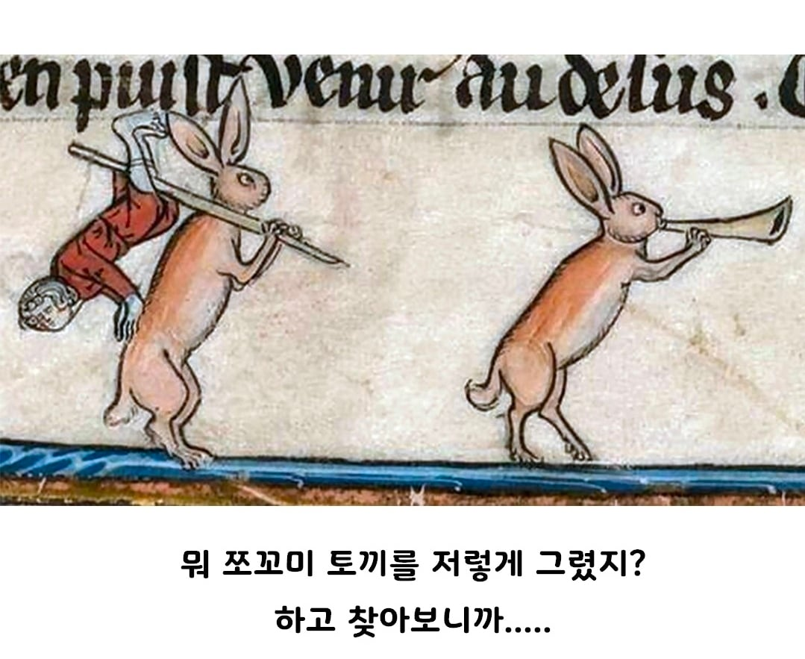
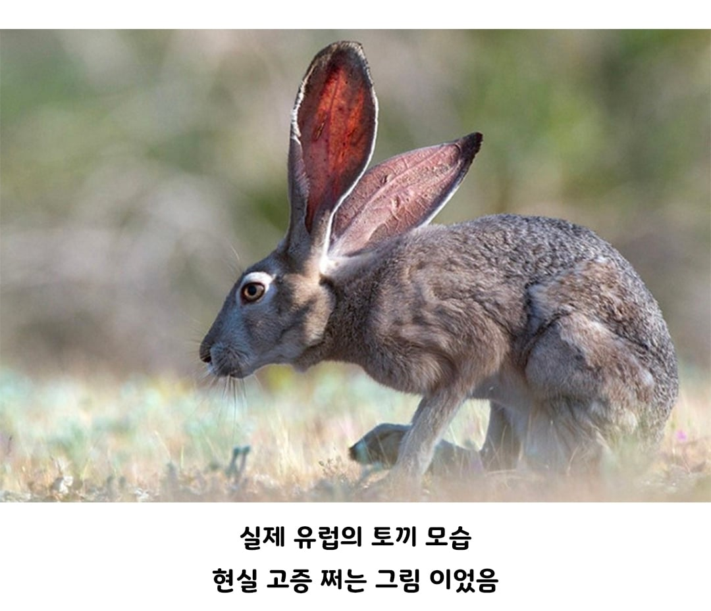

=279원
슬라임 다음 단계 몹이네
hare
원앙인가 걔도 서양종은 살벌하던데
수달도 외국 수달은 괴물이라함
근데 청설모는 미국 청설모가 훨씬 통통하고 이쁜듯
몸만 보면 캥거루인데
우리가 아는 귀염귀염 토끼는 rabbit
저 길쭉길쭉 토끼는 hare
토끼와 거북이에 나오는 토끼도 hare래
한국에 자생하는 산토끼(Hare)도 귀엽게 생겼우!
만렙토끼가 괜히 강한게 아니지
그리고 저 토끼가 개소리나 병신같은 행동을 까는 풍자로 그린거라고함
더럽게 못생겼네 ㅋㅋㅋ
이상한 토끼 그림을 게임 속에서 보고 싶으시다면
지금 바로 킹덤컴2:딜리버런스 다운로드!
(대충 킹덤컴2 토끼 콘)
여기선 귀여운 수달도 남미쪽은 어우 씨발ㅋㅋㅋㅋ
안티옥의 성스러운 수류탄 없이는 상대하기 힘든 비쥬얼...
악마의 하수인처럼 생김
저 토끼는 hare 우리가보는 토끼는 rabbit 둘은 속이
다름 그래서 교배도 불가능.
인간과 침팬지 , 개와 여우 , 고양이와 호랑이 차이임
오래 시도하면 되지 않을까..... 아주 오래....
아니 교배가 안돼? 존나 신기하네;
중세 유럽의 책 삽화들을 보면 토끼가 괴물이나 악마처럼 그려져 있는 장면들이 자주 나오는데 이런 그림이 나오게 된 이유에는 여러 설이 있음.
일단 중세 유럽인들이 보던 토끼는 우리가 일반적으로 생각하는 귀염뽀작한 애들이 아니라 거의 캥거루에 비슷할 정도의 비주얼임. 길이만 최고 70cm, 몸무게는 5kg에 속도도 70km 넘는 애들도 있음. 참고로 호주 토끼전쟁도 얘네들 때문임. 우리는 토끼가 한종류밖에 없어서 토끼를 지칭하는 말이 하나밖에 없는데 서양애들은 둘을 다르게 구분함,
또한 난폭하고 흉악하게 묘사한 토끼가 당시 혐오와 증오의 대상이었던 유대인을 상징한다는 설이 있음. 반면 항상 약자로 표현되는 토끼가 보복을 하고 신분이 높은 기사를 죽이는 그림들이 지금 힘없는 약자들이 언젠가 기득권들에게 보복을 하는 세상이 온다는 희망으로 그렸다는 설도 있음.
다른 설로는 옛날에 책을 필사하던 사람들이 주로 수도사들이었는데, 이 사람들이 생계를 위해 농작물도 기르고 밭도 일구고 했었음. 그래서 작물에 해를 끼치는 동물들과 곤충들을 자주 보고, 그놈들에게 쌓인 원한이 많아서 책에 넣는 삽화에 요괴처럼 그려넣었다는 설이 있음.(비슷하게 수도사들은 달팽이도 매우 혐오스럽게 그림)
한국 야생동물들이 방한스탯 찍느라 털이랑 지방이 쪄서 그런지 대부분 생긴게 순둥한 편인데 서양은 진짜들의 싸움이더라
역병토끼 Lv.57
한국토끼랑 만나면 잡아먹을것 같네
토끼는 사람을 죽인다니까
귀까지 근육질이네 ㅜㅠ 무슨운동 하려나
귀가 존나 긴거보면 멧토끼인거 같은데. 이름만 토끼지 토끼랑은 아예 다른 종임. 교배도 안됨.
보팔 래빗
한국의 멧토끼 산토끼는 같은 헤어인데도 얘들은 역시 귀염귀염함
우리 토끼 이미지는 종이 달라서가 아니고 한국에선 진짜 모든 동물들이 작고 귀여워지기 때문
'우사기'
앰브로스 비어스 소설에서 등장인물이 토끼보고 도망치는 묘사 있어서 뭐지 싶었던
하레
킹덤컴2
토끼도 종 존나 다른듯
인도 북부쪽에서 본 토끼가 존나 기여웠음 털 복슬복슬하니
안고 사진찍으라고해서 존나 열심히 찍었더니 20루피 달라고해서 좆같긴 했는데